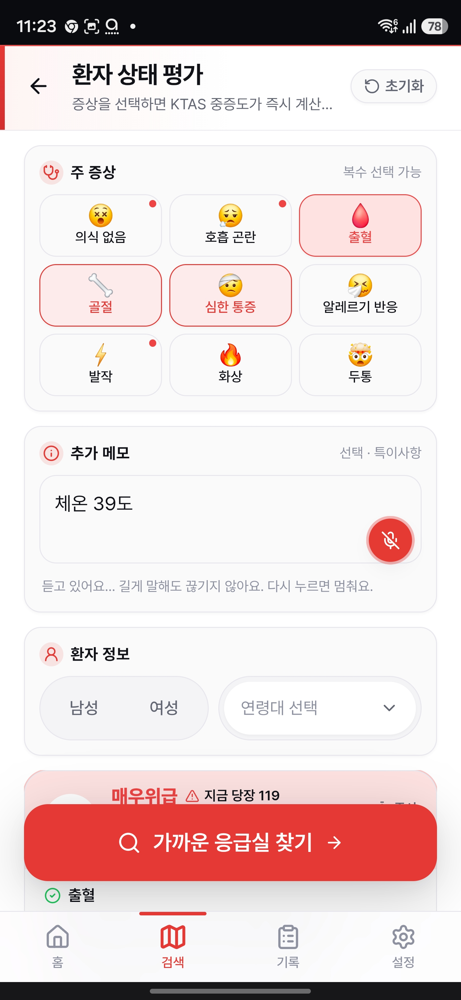
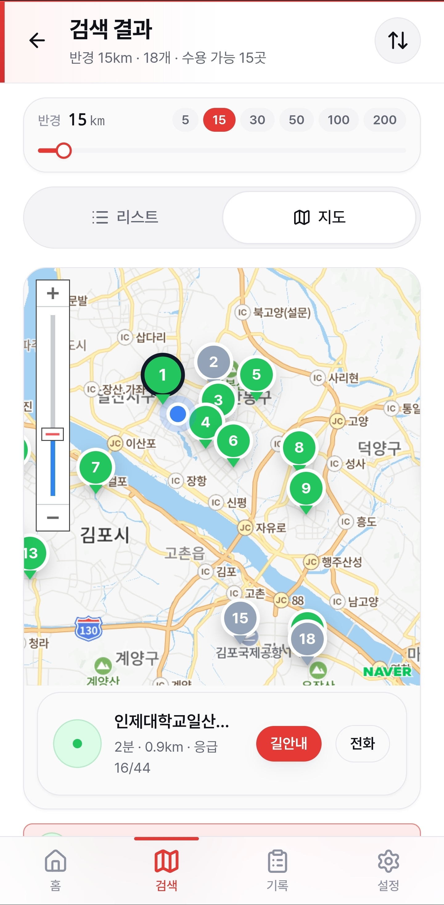
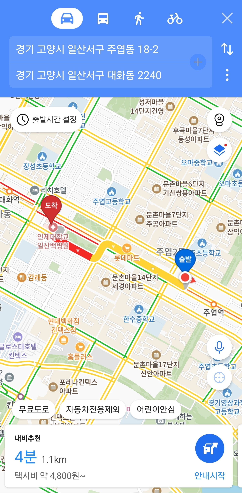
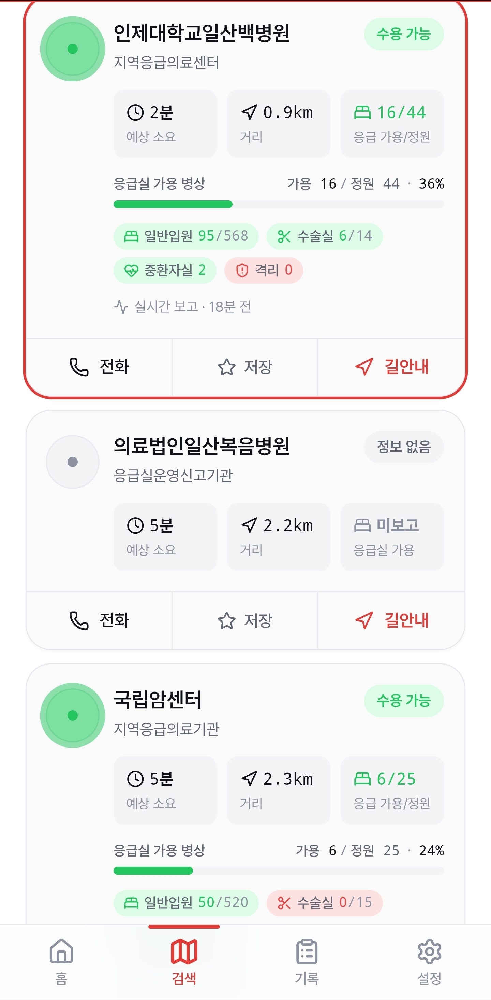
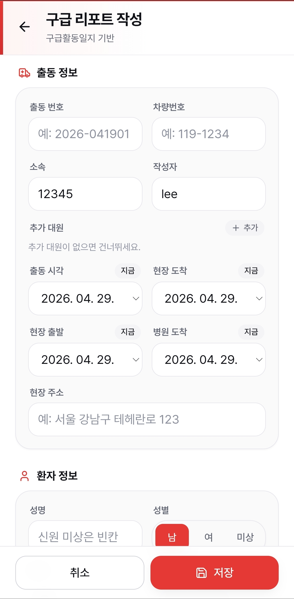

긴급할 때, 바로 찾는 가장 가까운 응급실
앱 설치 없이 브라우저 접속!
다급할 땐 음성으로 증상을 말하면 AI가 중증도를 자동 판정합니다.

수용 가능한 응급실이 지도에 표시됩니다.
🟢수용 🟠혼잡 🔴불가 상태를 직관적으로 확인하세요.

병원을 선택하면 내비게이션 즉시 연결!
카카오내비, T맵 등으로 1초 만에 최적 경로를 안내받으세요.

구급대원의 골든타임 수호 파트너
이동 중에도 실시간 업데이트!
권역/지역 응급의료센터 병상 수를 지도로 정확히 확인하세요.

출동부터 인계까지 타임스탬프 자동 기록.
터치 한 번으로 PDF 출동 보고서를 완성하여 보고 업무를 줄이세요.
